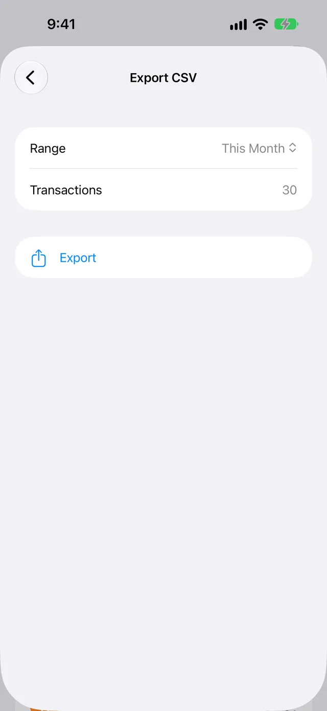
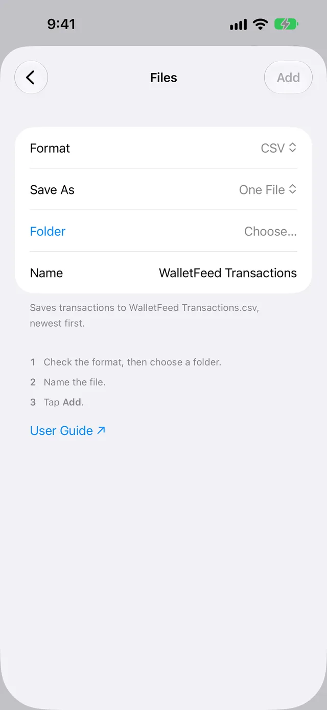

Download your Apple Card transactions and statements
You can download your Apple Card transactions in Wallet on your iPhone or iPad, or at card.apple.com on a Mac or a PC. WalletFeed also makes a file of your transactions on your iPhone. Wallet and card.apple.com also give you each monthly statement as a PDF file that you can print.
Download WalletFeed on the App Store
- On an iPhone or iPad, download the transactions of a statement or the transactions between two dates in Wallet.
- On a Mac or a PC, download the transactions between two dates at card.apple.com.
- For a file to print, download a PDF statement.
- For the transactions of this month, with the pending transactions, make a CSV file with Export CSV in WalletFeed.
In Wallet, Export Transactions makes an export file from a statement. A statement has the transactions of one month. Wallet and card.apple.com can also make a file with the transactions between two dates. Apple does not tell you if these dates can include this month. In WalletFeed, Export CSV makes a CSV file of a period that you select, for example This Month or All. WalletFeed Pro is not necessary for Export CSV.
With WalletFeed Pro, WalletFeed also updates a file or a service when your transactions change.
For your other Wallet accounts, refer to the Apple Cash page and the Savings page.
Before you start
You must have:
- Your Apple Card in Wallet on your iPhone or iPad
- For card.apple.com, a computer with a web browser
- For WalletFeed, an iPhone with iOS 26 or a newer version
- For a file or a service that WalletFeed updates, WalletFeed Pro.
WalletFeed is available only in the US. WalletFeed must have access to your Apple Card.
WalletFeed Pro is a subscription with a 1-week free trial, or a one-time Lifetime purchase. WalletFeed Pro is not necessary for Export CSV.
Download the transactions of a statement in Wallet
Wallet has a statement for each previous month. Export Transactions makes a CSV, OFX, QFX or QBO file with the transactions of a statement.
File formats for your transactions gives the apps for each file format.
-
On your iPhone, open Wallet.
-
Tap your Apple Card.
-
Tap Card Balance.
-
Scroll to Statements.
-
Tap a statement.
-
Tap Export Transactions.
-
Select a file format (for example, CSV for a spreadsheet in Numbers or Excel).
-
To save the file in the Files app, tap Save to Files.
You can also send the file with Mail or AirDrop.
-
Select a folder.
-
Tap Save.
On an iPad, open your Apple Card in the Settings app. Then do steps 3 to 10.
Download the transactions between two dates in Wallet
- On your iPhone, open Wallet.
- Tap your Apple Card.
- Tap Card Balance.
- Below Statements, tap Export Transactions.
- Select a start date.
- Select an end date.
- Select a file format.
- Tap the done button.
On an iPad, open your Apple Card in the Settings app. Then do steps 3 to 8.
Open your Apple Card on an iPad
On an iPad, your Apple Card is in the Settings app.
- On your iPad, open the Settings app.
- Tap Wallet & Apple Pay.
- Tap Apple Card.
Then the steps are the same as on an iPhone, from Card Balance.
Download transactions on a Mac or a PC
On a computer, card.apple.com makes a file with the transactions between two dates. You use a web browser on a Mac or a PC.
- On your computer, open card.apple.com.
- Get access to your Apple Card with your Apple Account.
- Click Statements.
- Click Export Transactions.
- Select a start date.
- Select an end date.
- Select a file format.
- Click Export.
Download a PDF statement
A PDF statement is a file of one monthly statement. You can save, print or send this file.
Download a PDF statement in Wallet
-
On your iPhone, open Wallet.
-
Tap your Apple Card.
-
Tap Card Balance.
-
Scroll to Statements.
-
Tap a statement.
-
Tap Download PDF Statement.
-
When the PDF file opens, tap the Share button.
You can then save, print or send the file.
On an iPad, open your Apple Card in the Settings app. Then do steps 3 to 7.
Download a PDF statement at card.apple.com
-
On your computer, open card.apple.com.
-
Get access to your Apple Card with your Apple Account.
-
In the sidebar, click Statements.
The newest statement is first in the list.
-
Click the download button for a statement.
Print a statement
To print a statement, you download the PDF statement first.
- On your iPhone or iPad, download the PDF statement (refer to Download a PDF statement in Wallet).
- When the PDF file opens, tap the Share button.
- In the menu, tap the item that prints the file.
On a Mac or a PC, do these steps:
- Download the PDF statement (refer to Download a PDF statement at card.apple.com).
- Open the PDF file on your computer.
- Print the file from the app that shows it.
Apple gives the steps for Wallet and card.apple.com in Download your Apple Card statements or export your transactions and Download Apple Card statements online.
File formats for your transactions
Wallet makes CSV, OFX, QFX and QBO files of your transactions, and PDF files of your statements. WalletFeed writes CSV, OFX, QIF and Quicken CSV files.
| File format | Source | Use |
|---|---|---|
| CSV | Wallet or WalletFeed | A spreadsheet, for example in Numbers or Excel |
| OFX | Wallet, or WalletFeed with WalletFeed Pro | An app that can import OFX files, for example Quicken for Mac, GnuCash or Actual Budget |
| QFX | Wallet | Quicken, which imports QFX files (Web Connect files) |
| QBO | Wallet | QuickBooks, which uses QBO files (Web Connect files) for bank transactions |
| QIF | WalletFeed with WalletFeed Pro | An app that can import QIF files, for example GnuCash or Banktivity |
| Quicken CSV | WalletFeed with WalletFeed Pro | Quicken for Windows |
| Wallet or card.apple.com | A statement that you print or keep |
Make a CSV file with Export CSV
Export CSV in WalletFeed makes one CSV file with your transactions from a period that you select. You can use it without WalletFeed Pro. The file includes pending transactions. The file does not change after WalletFeed makes it.
-
On your iPhone, open WalletFeed.
-
Tap Settings (the gear button) at the top of the screen.
-
In the Data section, tap Export CSV.

-
Tap Range.
-
Select a period: This Month, Last Month, Last 90 Days, This Year, Last Year or All.

Transactions shows the number of transactions in the period.
-
Tap Export.
-
Tap Save to Files.
-
Select a folder.
-
Tap Save.
This Month has the transactions from the first day of this month, with the pending transactions. All has all the transactions that WalletFeed can read in Wallet, from each month.
The name of the file includes the period, for example Apple Card Last Month.csv. The file has the transactions from each Wallet account that WalletFeed can read. The Account column shows the account of each transaction. WalletFeed makes the file on your iPhone and does not keep it.
Columns in the CSV file
Each CSV file from WalletFeed has one row for each transaction and these columns:
| Column | Data |
|---|---|
| Date | The date of the transaction, for example 2026-10-28. |
| Posted Date | The date that the charge posted. It is empty while the charge is pending. |
| Merchant | The merchant name, or the description if Wallet has no merchant name. |
| Description | The description of the transaction in Wallet. |
| Original Description | The description of the transaction with no changes. |
| Amount | The value of the transaction, for example -23.40. Purchases and fees have a minus sign. Payments and refunds have no minus sign. |
| Currency | The currency code, for example USD. |
| Direction | debit for purchases and fees, or credit for refunds, payments and deposits. |
| Status | The status in Wallet, for example pending or authorized before the charge posts, booked after it posts, or rejected for a declined charge. |
| Type | The type of transaction in Wallet, for example pointOfSale for a purchase, refund, transfer or fee. |
| Category | The WalletFeed category, for example Groceries, Dining or Cash & Transfers. |
| MCC | The merchant category code (ISO 18245), for example 5411 for a grocery store. It is empty if Wallet has no code. |
| Account | The Wallet account, for example Apple Card. |
| Foreign Amount | For a purchase in a different currency, the value in that currency. A purchase has a minus sign, as in Amount. |
| Foreign Currency | For a purchase in a different currency, the code of that currency. |
| Exchange Rate | For a purchase in a different currency, the exchange rate from Wallet. |
| WalletFeed ID | The ID of the transaction. You can use it to find the same transaction in a different file. |
Make a file in a shortcut with WalletFeed Pro
With WalletFeed Pro, the WalletFeed action Export Transactions in the Shortcuts app makes a CSV, OFX or QIF file of a period. The subsequent actions in the shortcut save or send the file. For example, a shortcut can save the file of last month in iCloud Drive. Refer to Make a file of your transactions in a shortcut.
Update a file or a service with WalletFeed Pro
With WalletFeed Pro, WalletFeed sends your transactions from your iPhone to a destination. When your transactions change, WalletFeed updates the destination. Thus, it is not necessary to make a new file.
WalletFeed has no account, and no WalletFeed server keeps your transactions or keys. Your transactions go from your iPhone directly to the folder or the service that you select.
Some of the destinations are:
- A CSV file in a folder, for example in iCloud Drive
- An OFX file or a QIF file for each month
- A spreadsheet in Google Sheets
- A budget app, for example Lunch Money or PocketSmith.
For a CSV file, WalletFeed writes one file, or one file for each month. You can open a CSV file in Excel or Numbers.
An OFX or QIF file from WalletFeed includes a charge only after the charge posts.
To add a CSV file that WalletFeed updates:
-
On your iPhone, open WalletFeed.
-
Tap Destinations.
-
Tap + at the top of the screen.

-
In the search field, type
CSV. -
Tap CSV File.
If you do not have WalletFeed Pro, the WalletFeed Pro screen opens. After you get WalletFeed Pro on that screen, the Files screen opens.

-
Tap Folder.
-
Select a folder, for example in iCloud Drive.
Folder then shows the name of the folder.
-
Tap Add.
-
When WalletFeed shows Save Transactions to Files?, tap Save.
The message tells you the data that the folder will receive. It also gives the accounts and the period of the transactions. If you tap Cancel, WalletFeed removes the new destination.
WalletFeed then writes your transactions to WalletFeed Transactions.csv in the folder.
Changes to the file
While WalletFeed is open, the file receives changes in seconds. When WalletFeed is not open, iOS starts WalletFeed approximately 1 hour or less after a change in Wallet. If Background Sync is on in Settings › Sync, WalletFeed then updates the file. If WalletFeed cannot open the folder at that time, the file changes when you open WalletFeed, when an automation starts, or while your iPhone charges.
Send previous transactions
A new destination also receives previous transactions from the start date in Settings › Sync › Initial History. Initial History is All until you change it. After you add the destination, you can send the transactions of a different period with Send History on the destination screen. You can select 30 Days, 90 Days, 1 Year or All.
Delete a destination
- In WalletFeed, tap Destinations.
- Tap the destination.
- Tap Delete.
- Tap Delete again.
After you delete the destination, the file and the transactions in it stay in the folder. A service keeps the transactions that it received. The terms of that service are applicable to these transactions.
If there is a problem
If this month has no statement in Wallet
Wallet makes a statement only after the end of the month. Export CSV in WalletFeed can make a file with the transactions of this month.
- On your iPhone, open WalletFeed.
- Tap Settings (the gear button) at the top of the screen.
- In the Data section, tap Export CSV.
- Tap Range.
- Select This Month.
- Tap Export.
- Tap Save to Files.
- Select a folder.
- Tap Save.
If you cannot tap Export in WalletFeed
You cannot tap Export while WalletFeed reads your transactions, or when the period has no transactions.
- Make sure that Transactions shows a number.
- If the number is 0, select a different period in Range.
If there is an apostrophe before a name or a description
In the Merchant, Description, Original Description and Account columns, WalletFeed puts an apostrophe (') before text that starts with =, +, - or @. Thus, a spreadsheet does not use the text as a formula. WalletFeed does not put an apostrophe before an amount.
 Scan with your iPhone
Scan with your iPhone
Related
Updated November 26, 2026